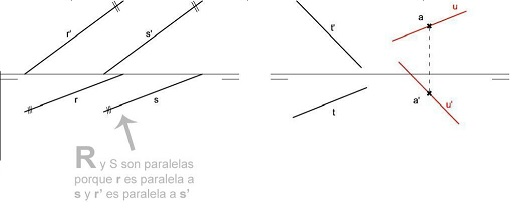
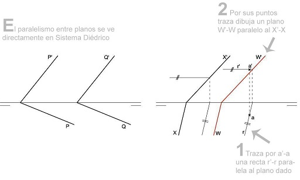
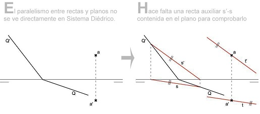

Paralelismo Recta-Recta
Dos rectas son paralelas entre sí cuando sus proyecciones homónimas son paralelas.
Por ello, las proyecciones verticales tienen que ser paralelas entre sí y las proyecciones horizontales paralelas entre sí.
De modo que si dos rectas dadas por sus proyecciones r"-r’, s"-s’, han de ser paralelas, r" deberá ser paralela a s" y r’ deberá ser paralela a s’.
Excepción
Las proyecciones de una recta de perfil son siempre perpendiculares a la Línea de Tierra, pero eso no significa que todas las
rectas de perfil sean paralelas entre sí. Es necesario realizar una tercera vista de perfil para ver la dirección de las rectas y comprobar si son o no paralelas.

Paralelismo Plano-Plano
Dos planos son paralelos entre sí cuando sus trazas homónimas son paralelas.
El paralelismo entre planos se ve directamente en Sistema Diédrico.
Dados dos planos en Sistema Diédrico definidos por sus trazas P’-P, Q’-Q, estos serán paralelos cuando P’ sea paralelo a Q’ y a su vez P sea paralelo a Q.
Excepción
Planos paralelos a la Línea de Tierra y planos que contienen a la Línea de Tierra.
Estos dos tipos de planos tienen trazas paralelas a la Línea de Tierra o coinciden con ella, pero eso no significa que siempre sean paralelos entre sí.
Para comprobar el paralelismo entre estos planos es necesario recurrir a la vista de perfil, que nos indicará la verdadera magnitud de su inclinación.
En el plano de perfil podremos definir si este tipo de planos son paralelos entre sí.

Paralelismo Recta-Plano
Una recta es paralela a un plano cuando es paralela a una recta contenida en el plano.
Esto significa que el paralelismo entre rectas y planos no se ve directamente en diédrico. Se necesita siempre una recta auxiliar para comprobar que son paralelos.
Por ejemplo, para dibujar una recta t"-t’ paralela a un plano dado Q’-Q que pase por un punto a"-a’ tendremos que dibujar una recta s"-s’
cualquiera contenida en el plano Q’-Q y luego trazar por el punto una recta paralela a dicha recta s"-s’.
